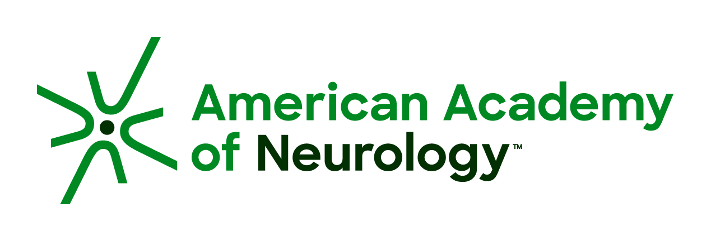
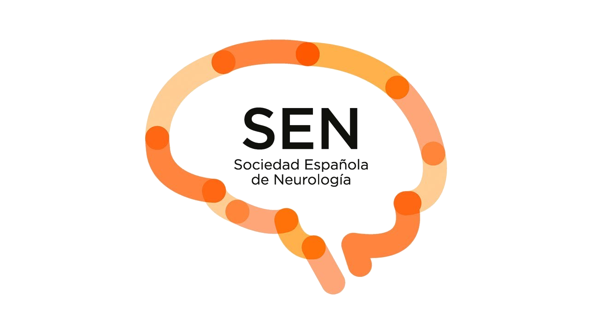
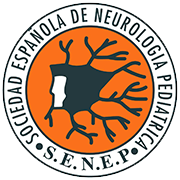

State of the Art in Duchenne Muscular Dystrophy: Self-Assessment Program
Innovación en
Epigenética
Del mapa molecular a la biografía del paciente. El programa formativo definitivo basado en la evidencia exclusiva de la American Academy of Neurology (AAN).
"La modulación epigenética no solo repara la fibra muscular; redibuja el proyecto vital del paciente con DMD."
Más allá de la Distrofina:
La Era de la Modulación.
Justificación Clínica
Cubriendo Gaps Asistenciales en el SNS.
Dimensiones de Capacitación.
Conocimiento
Fisiopatológico
- ▹ Comprender la influencia de la regulación epigenética y el fenotipo muscular.
- ▹ Identificar el papel de las HDAC en inflamación y fibrosis (terapias mutación-independientes).
Manejo Clínico
y Terapéutico
- ▹ Analizar evidencia de eficacia y seguridad clínica (Estudio EPIDYS).
- ▹ Interpretar métricas de posicionamiento: recuento plaquetario y niveles de triglicéridos.
- ▹ Dominar escalas funcionales de precisión (4SC, NSAA).
Soft Skills y
Comunicación
- ▹ Incorporar estrategias de Medicina Narrativa para diagnósticos complejos.
- ▹ Aplicar el modelo de Toma de Decisiones Compartida (SDM) evaluando PROs.
- ▹ Prevenir el Burnout y la Fatiga por Compasión en los equipos.
Estructura Académica.
Aprendizaje progresivo. 3 Módulos compuestos por 8 apartados pedagógicos obligatorios para garantizar la asimilación.
Profundizar en el paisaje molecular actual y la relevancia de la regulación epigenética en el músculo distrófico para predecir el comportamiento clínico ante terapias sistémicas.
Análisis exhaustivo de la evidencia científica de las terapias emergentes y el dominio de los protocolos de seguridad clínica según el marco regulatorio del SNS.
Integrar la ventaja técnica de la innovación terapéutica con el modelo de Medicina Hipocrática, enfocándonos en la autonomía del paciente y la prevención del desgaste profesional.
¿A quién va dirigido?
El éxito en el manejo de la DMD depende de la coordinación entre los distintos niveles asistenciales.
Neurología y Neuropediatría
Manejo terapéutico avanzado y prescripción en Unidades de Enfermedades Neuromusculares.
Genética Clínica
Interpretación de la arquitectura genética, consejo genético y fenotipado predictivo.
Pediatría (AP)
Perfil crítico para la sospecha clínica inicial, detección precoz (niveles de CK) y derivación.
Medicina de Familia
Responsables del seguimiento en la edad adulta, manejo de comorbilidades y humanización.
Comité Editorial.
KOLs de Referencia Nacional en Distrofias Musculares.
Dr. Andrés Nascimento Osorio
Neuropediatra. Investigador principal ensayos clínicos DMD. Hospital Sant Joan de Déu (Barcelona).
Dr. Adolfo López de Munain
Director Área Neurociencias Biodonostia. Jefe Servicio Neurología. Hospital Univ. Donostia.
Dr. Juan Jesús Vílchez Padilla
Catedrático Neurología. Premio Nacional de Medicina Siglo XXI. Hospital La Fe (Valencia).

Scientific Source
Aval Solicitado
Aval Solicitado
La técnica cura.
El humanismo sana.
Transformando la innovación neuromuscular en proyectos de vida.
Nuestra visión formativa trasciende el conocimiento técnico y el hito científico de las nuevas terapias. Dotamos a los profesionales de la excelencia clínica y humana necesaria para acompañar de forma integral al paciente y a su familia a lo largo del desafío que supone la Distrofia Muscular.